CODING AGENTS AS PIXEL WORLD MODELS
traex/DeepSeek-V4.1-Flash · dynamic_spatial_relationship_0022
点击播放 · 原生 RGB 像素
逐轮保存的候选
回放视频、检查图与代码变化。
每份候选均可单独播放。实际图片检查记录在下方工具轨迹中。
候选 01播放与检查图
点击播放 · 原生 RGB 像素
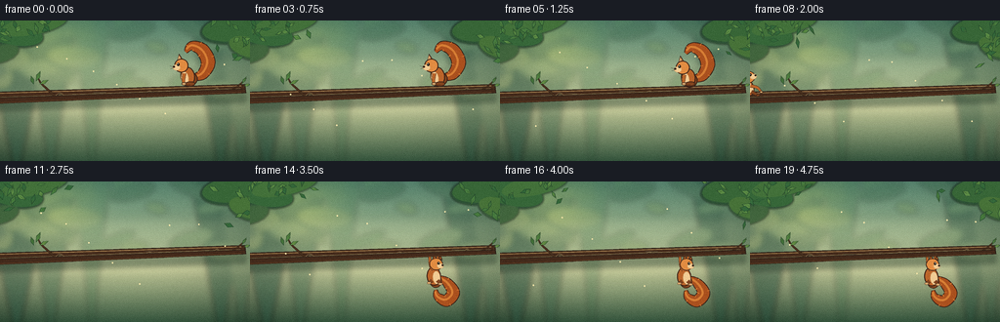
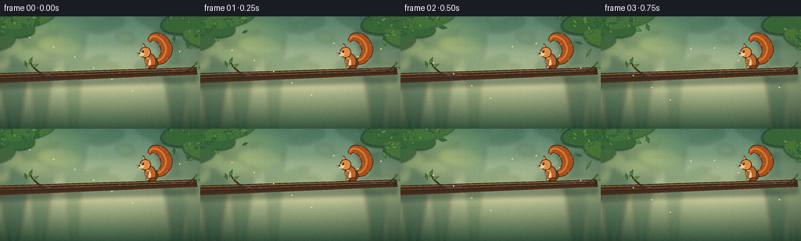
展开代码变化
--- 上一保存版本
+++ 本次保存版本
@@ -0,0 +1,578 @@
+from __future__ import annotations
+
+import math
+import random
+from pathlib import Path
+
+import numpy as np
+from PIL import Image, ImageDraw, ImageFilter
+
+import artifact_io
+
+
+W, H = 256, 144
+SS = 4
+RNG = random.Random(20261110)
+
+
+def S(value: float) -> int:
+ return int(round(value * SS))
+
+
+def scaled_point(point: tuple[float, float]) -> tuple[int, int]:
+ return S(point[0]), S(point[1])
+
+
+def rotate(point: tuple[float, float], center: tuple[float, float], degrees: float) -> tuple[float, float]:
+ angle = math.radians(degrees)
+ c, s = math.cos(angle), math.sin(angle)
+ x, y = point[0] - center[0], point[1] - center[1]
+ return center[0] + x * c - y * s, center[1] + x * s + y * c
+
+
+def ellipse_points(
+ cx: float,
+ cy: float,
+ rx: float,
+ ry: float,
+ angle: float = 0.0,
+ count: int = 48,
+) -> list[tuple[int, int]]:
+ points = []
+ for index in range(count):
+ theta = math.tau * index / count
+ x, y = rx * math.cos(theta), ry * math.sin(theta)
+ points.append(scaled_point(rotate((cx + x, cy + y), (cx, cy), angle)))
+ return points
+
+
+def draw_ellipse(
+ draw: ImageDraw.ImageDraw,
+ cx: float,
+ cy: float,
+ rx: float,
+ ry: float,
+ fill,
+ outline=None,
+ width: float = 0.0,
+ angle: float = 0.0,
+):
+ draw.polygon(
+ ellipse_points(cx, cy, rx, ry, angle),
+ fill=fill,
+ outline=outline,
+ width=max(1, S(width)) if outline is not None else 1,
+ )
+
+
+def draw_polygon(draw: ImageDraw.ImageDraw, points, fill, outline=None, width: float = 0.0):
+ scaled = [scaled_point(point) for point in points]
+ draw.polygon(
+ scaled,
+ fill=fill,
+ outline=outline,
+ width=max(1, S(width)) if outline is not None else 1,
+ )
+
+
+def draw_line(draw: ImageDraw.ImageDraw, points, fill, width: float):
+ draw.line([scaled_point(point) for point in points], fill=fill, width=max(1, S(width)), joint="curve")
+
+
+def catmull_rom(points: list[tuple[float, float]], samples_per_segment: int = 18):
+ pts = [points[0], *points, points[-1]]
+ result = []
+ for index in range(1, len(pts) - 2):
+ p0, p1, p2, p3 = pts[index - 1 : index + 3]
+ for sample in range(samples_per_segment):
+ t = sample / samples_per_segment
+ t2, t3 = t * t, t * t * t
+ x = 0.5 * (
+ 2 * p1[0]
+ + (-p0[0] + p2[0]) * t
+ + (2 * p0[0] - 5 * p1[0] + 4 * p2[0] - p3[0]) * t2
+ + (-p0[0] + 3 * p1[0] - 3 * p2[0] + p3[0]) * t3
+ )
+ y = 0.5 * (
+ 2 * p1[1]
+ + (-p0[1] + p2[1]) * t
+ + (2 * p0[1] - 5 * p1[1] + 4 * p2[1] - p3[1]) * t2
+ + (-p0[1] + 3 * p1[1] - 3 * p2[1] + p3[1]) * t3
+ )
+ result.append((x, y))
+ result.append(points[-1])
+ return result
+
+
+def ribbon_polygon(points, widths):
+ left, right = [], []
+ for index, (point, width) in enumerate(zip(points, widths)):
+ before = points[max(0, index - 1)]
+ after = points[min(len(points) - 1, index + 1)]
+ dx, dy = after[0] - before[0], after[1] - before[1]
+ length = max(0.001, math.hypot(dx, dy))
+ nx, ny = -dy / length, dx / length
+ left.append((point[0] + nx * width * 0.5, point[1] + ny * width * 0.5))
+ right.append((point[0] - nx * width * 0.5, point[1] - ny * width * 0.5))
+ return left + right[::-1]
+
+
+def draw_ribbon(draw, controls, widths, fill, outline, outline_extra=1.4):
+ curve = catmull_rom(controls, 16)
+ if len(widths) != len(controls):
+ widths = np.interp(np.linspace(0, 1, len(controls)), np.linspace(0, 1, len(widths)), widths)
+ sample_widths = np.interp(np.linspace(0, 1, len(curve)), np.linspace(0, 1, len(widths)), widths)
+ draw.polygon(
+ [scaled_point(point) for point in ribbon_polygon(curve, sample_widths + outline_extra)],
+ fill=outline,
+ )
+ draw.polygon(
+ [scaled_point(point) for point in ribbon_polygon(curve, sample_widths)],
+ fill=fill,
+ )
+ return curve, sample_widths
+
+
+def leaf(draw, cx, cy, length, width, angle, fill, outline):
+ base = [(cx - length * 0.52, cy), (cx, cy - width * 0.5), (cx + length * 0.52, cy), (cx, cy + width * 0.5)]
+ points = [rotate(point, (cx, cy), angle) for point in base]
+ draw_polygon(draw, points, fill, outline, 0.6)
+ vein_end = rotate((cx + length * 0.42, cy), (cx, cy), angle)
+ draw_line(draw, [(cx, cy), vein_end], (62, 96, 49), 0.45)
+
+
+def branch_center(x: float) -> float:
+ return 79.0 - 0.037 * x
+
+
+def branch_half_thickness(x: float) -> float:
+ return 6.1 - 0.006 * x
+
+
+def branch_top(x: float) -> float:
+ return branch_center(x) - branch_half_thickness(x)
+
+
+def make_background() -> Image.Image:
+ yy, xx = np.mgrid[0:H, 0:W].astype(np.float32)
+ yn = yy / (H - 1)
+ top = np.array([91, 139, 119], dtype=np.float32)
+ middle = np.array([196, 203, 158], dtype=np.float32)
+ bottom = np.array([57, 91, 67], dtype=np.float32)
+ blend_up = np.clip(yn / 0.64, 0, 1)[..., None]
+ blend_down = np.clip((yn - 0.62) / 0.38, 0, 1)[..., None]
+ image = top * (1 - blend_up) + middle * blend_up
+ image = image * (1 - blend_down) + bottom * blend_down
+
+ glow = np.exp(-(((xx - 49) / 47) ** 2 + ((yy - 28) / 35) ** 2) * 1.5)
+ image += glow[..., None] * np.array([54, 42, 11], dtype=np.float32)
+ vignette = np.clip(1.0 - (((xx - 128) / 190) ** 2 + ((yy - 72) / 155) ** 2) * 0.34, 0.73, 1.0)
+ image *= vignette[..., None]
+
+ base = Image.fromarray(np.uint8(np.clip(image, 0, 255))).resize((W * SS, H * SS), Image.Resampling.BICUBIC)
+
+ distant = Image.new("RGBA", base.size, (0, 0, 0, 0))
+ dd = ImageDraw.Draw(distant)
+ trunk_specs = [
+ (17, 37, 4.5, (38, 78, 62, 125)),
+ (52, 27, 3.2, (50, 91, 69, 92)),
+ (94, 18, 2.4, (57, 104, 72, 68)),
+ (226, 31, 4.0, (35, 75, 58, 115)),
+ (247, 23, 2.8, (52, 91, 68, 90)),
+ ]
+ for x, width, taper, color in trunk_specs:
+ draw_polygon(dd, [(x - width, 0), (x + width, 0), (x + taper, H), (x - taper, H)], color)
+ for _ in range(30):
+ cx = RNG.uniform(-15, W + 15)
+ cy = RNG.uniform(-8, 72)
+ rx = RNG.uniform(8, 28)
+ ry = RNG.uniform(3, 11)
+ green = RNG.choice([(42, 82, 56, 70), (67, 112, 67, 62), (109, 139, 72, 55)])
+ draw_ellipse(dd, cx, cy, rx, ry, green, angle=RNG.uniform(-25, 25))
+ distant = distant.filter(ImageFilter.GaussianBlur(S(2.8)))
+ base = Image.alpha_composite(base.convert("RGBA"), distant).convert("RGB")
+
+ mist = Image.new("RGBA", base.size, (0, 0, 0, 0))
+ md = ImageDraw.Draw(mist)
+ for y, alpha in [(44, 28), (57, 22), (92, 17)]:
+ draw_ellipse(md, W * 0.5, y, W * 0.58, 8, (224, 218, 175, alpha))
+ mist = mist.filter(ImageFilter.GaussianBlur(S(5.0)))
+ base = Image.alpha_composite(base.convert("RGBA"), mist).convert("RGB")
+
+ return base
+
+
+def draw_background_leaves(image: Image.Image):
+ draw = ImageDraw.Draw(image, "RGBA")
+ shadow = Image.new("RGBA", image.size, (0, 0, 0, 0))
+ sd = ImageDraw.Draw(shadow)
+ for cx, cy, rx, ry, angle, color in [
+ (13, 13, 32, 14, 10, (37, 74, 49, 225)),
+ (35, 3, 36, 12, -12, (47, 86, 49, 220)),
+ (239, 9, 34, 15, -7, (40, 77, 49, 230)),
+ (255, 28, 22, 12, 17, (52, 91, 51, 220)),
+ (2, 34, 18, 9, -18, (53, 91, 53, 210)),
+ ]:
+ draw_ellipse(sd, cx, cy, rx, ry, color, angle=angle)
+ shadow = shadow.filter(ImageFilter.GaussianBlur(S(1.0)))
+ image.paste(shadow, (0, 0), shadow)
+
+ draw = ImageDraw.Draw(image, "RGBA")
+ for cx, cy, rx, ry, angle, color in [
+ (14, 13, 30, 12, 10, (54, 102, 58, 245)),
+ (35, 4, 34, 10, -12, (66, 112, 59, 245)),
+ (239, 8, 32, 13, -7, (55, 101, 56, 245)),
+ (254, 27, 20, 10, 17, (70, 113, 57, 245)),
+ ]:
+ draw_ellipse(draw, cx, cy, rx, ry, color, angle=angle)
+
+ for _ in range(36):
+ cluster = RNG.choice([(10, 13), (39, 4), (241, 9), (254, 29)])
+ cx = cluster[0] + RNG.gauss(0, 15)
+ cy = cluster[1] + RNG.gauss(0, 8)
+ angle = RNG.uniform(-180, 180)
+ fill = RNG.choice([(70, 121, 63, 235), (89, 137, 69, 225), (51, 103, 59, 238)])
+ leaf(draw, cx, cy, RNG.uniform(7, 13), RNG.uniform(3, 6), angle, fill, (35, 71, 45, 180))
+
+
+def draw_branch(image: Image.Image, foreground_overlay=False):
+ layer = Image.new("RGBA", image.size, (0, 0, 0, 0))
+ draw = ImageDraw.Draw(layer, "RGBA")
+
+ if not foreground_overlay:
+ # Soft shadow gives the branch depth without competing with the squirrel.
+ shadow = Image.new("RGBA", image.size, (0, 0, 0, 0))
+ sd = ImageDraw.Draw(shadow)
+ top = [(x, branch_center(x) + 3) for x in range(-8, 253, 4)]
+ bottom = [(x, branch_center(x) + 14) for x in range(252, -9, -4)]
+ draw_polygon(sd, top + bottom, (23, 42, 31, 90))
+ shadow = shadow.filter(ImageFilter.GaussianBlur(S(2.2)))
+ image.alpha_composite(shadow)
+
+ draw = ImageDraw.Draw(layer, "RGBA")
+ upper = [(x, branch_center(x) - branch_half_thickness(x)) for x in range(-10, 253, 3)]
+ lower = [(x, branch_center(x) + branch_half_thickness(x)) for x in range(252, -11, -3)]
+ draw_polygon(draw, upper + lower, (68, 43, 28, 255), (43, 31, 23, 255), 1.0)
+
+ highlight = [(x, branch_center(x) - branch_half_thickness(x) + 1.4) for x in range(-8, 250, 3)]
+ draw_line(draw, highlight, (157, 113, 69, 220), 1.1)
+ midlight = [(x, branch_center(x) - 0.4) for x in range(-6, 249, 4)]
+ draw_line(draw, midlight, (113, 72, 40, 145), 0.65)
+
+ for x in [18, 42, 68, 96, 122, 149, 176, 207, 233]:
+ y = branch_center(x) + RNG.uniform(-2.8, 2.8)
+ length = RNG.uniform(7, 18)
+ draw_line(
+ draw,
+ [(x, y), (min(248, x + length), y + RNG.uniform(-1.0, 1.0))],
+ (48, 31, 22, 145),
+ RNG.uniform(0.35, 0.7),
+ )
+ for x, y, rx, ry in [(61, 76.3, 3.3, 2.2), (153, 73.7, 2.5, 1.7), (222, 70.4, 2.0, 1.4)]:
+ draw_ellipse(draw, x, y, rx, ry, (50, 32, 22, 230), (135, 89, 51, 170), 0.5, -8)
+ draw_ellipse(draw, x + 0.5, y - 0.3, rx * 0.55, ry * 0.45, (75, 49, 29, 180), angle=-8)
+
+ # Small twig and leaf sprays frame the branch without hiding the action.
+ draw_ribbon(
+ draw,
+ [(56, 77), (48, 70), (41, 63), (38, 55)],
+ [1.7, 1.4, 1.0, 0.4],
+ (72, 48, 30, 255),
+ (42, 31, 23, 255),
+ 0.7,
+ )
+ for cx, cy, length, width, angle, fill in [
+ (39, 57, 11, 4.5, -66, (76, 125, 61, 245)),
+ (45, 63, 10, 4.0, -25, (98, 141, 67, 245)),
+ (33, 61, 9, 3.8, -110, (64, 112, 56, 245)),
+ ]:
+ leaf(draw, cx, cy, length, width, angle, fill, (37, 70, 41, 220))
+
+ draw_ribbon(
+ draw,
+ [(238, 71), (246, 65), (252, 59)],
+ [1.3, 0.8, 0.3],
+ (72, 48, 30, 255),
+ (42, 31, 23, 255),
+ 0.6,
+ )
+ for cx, cy, length, width, angle, fill in [
+ (250, 61, 8, 3.2, -58, (78, 126, 62, 240)),
+ (253, 66, 7, 3.0, -18, (102, 144, 69, 240)),
+ ]:
+ leaf(draw, cx, cy, length, width, angle, fill, (37, 70, 41, 220))
+ else:
+ # Redrawing the front edge lets the hanging squirrel's paws disappear
+ # into the branch while its body remains clearly beneath it.
+ upper = [(x, branch_center(x) + 0.1) for x in range(-10, 253, 3)]
+ lower = [(x, branch_center(x) + branch_half_thickness(x)) for x in range(252, -11, -3)]
+ draw_polygon(draw, upper + lower, (66, 42, 28, 255), (43, 31, 23, 255), 0.8)
+ rim = [(x, branch_center(x) + branch_half_thickness(x) - 1.0) for x in range(-8, 250, 3)]
+ draw_line(draw, rim, (91, 56, 33, 235), 1.1)
+ for x in [20, 46, 75, 104, 132, 161, 190, 219, 241]:
+ y = branch_center(x) + RNG.uniform(-0.3, 2.5)
+ draw_line(
+ draw,
+ [(x, y), (min(249, x + RNG.uniform(5, 12)), y + RNG.uniform(-0.5, 0.5))],
+ (47, 30, 21, 130),
+ 0.45,
+ )
+
+ image.alpha_composite(layer)
+
+
+FUR_OUTLINE = (54, 32, 23, 255)
+FUR_DARK = (128, 67, 31, 255)
+FUR = (184, 100, 43, 255)
+FUR_LIGHT = (222, 139, 67, 255)
+TAIL_DARK = (128, 62, 27, 255)
+TAIL = (168, 80, 31, 255)
+TAIL_LIGHT = (211, 125, 53, 255)
+CREAM = (238, 202, 150, 255)
+CREAM_DARK = (211, 165, 111, 255)
+
+
+def draw_tail(draw, controls, widths, phase=0.0):
+ curve, sample_widths = draw_ribbon(draw, controls, widths, TAIL, FUR_OUTLINE, 1.6)
+ if len(curve) > 8:
+ inner = []
+ for point, width in zip(curve[4:-4], sample_widths[4:-4]):
+ inner.append((point[0] - 0.8, point[1] - 0.7))
+ draw_ribbon(draw, inner[::max(1, len(inner) // 7)], [1.8] * 7, TAIL_LIGHT, TAIL_LIGHT, 0.2)
+ # Fine fur scallops around the silhouette.
+ for index in range(5, len(curve) - 5, 8):
+ p = curve[index]
+ q = curve[min(len(curve) - 1, index + 3)]
+ dx, dy = q[0] - p[0], q[1] - p[1]
+ length = max(0.01, math.hypot(dx, dy))
+ nx, ny = -dy / length, dx / length
+ offset = sample_widths[index] * 0.48
+ side = 1 if (index // 8 + int(phase * 4)) % 2 == 0 else -1
+ tip = (p[0] + nx * offset * side * 1.18, p[1] + ny * offset * side * 1.18)
+ draw_line(draw, [(p[0] + nx * offset * side * 0.75, p[1] + ny * offset * side * 0.75), tip], TAIL_LIGHT, 0.7)
+
+
+def draw_squirrel_perch(draw, cx: float, crouch: float, sway: float):
+ foot_y = branch_top(cx) + 0.2
+ body_y = foot_y - 10.0 + crouch * 2.2
+ head_y = foot_y - 21.0 + crouch * 3.0
+ lean = 2.0 + crouch * 6.0
+
+ tail_points = [
+ (cx + 4, body_y + 1),
+ (cx + 14 + sway, body_y - 2),
+ (cx + 20 + sway * 1.4, body_y - 14),
+ (cx + 14 + sway, body_y - 27),
+ (cx + 3 + sway * 0.5, body_y - 31),
+ (cx - 3, body_y - 25),
+ ]
+ draw_tail(draw, tail_points, [4.2, 10.0, 13.5, 12.5, 8.5, 2.0], crouch)
+
+ # Haunch, torso, cream chest, and the visible hind foot.
+ draw_ellipse(draw, cx + 1.5, body_y + 2.8, 7.8, 7.3, FUR_DARK, FUR_OUTLINE, 1.0, -12)
+ draw_ellipse(draw, cx - 1.2 + lean * 0.15, body_y, 7.4, 9.7, FUR, FUR_OUTLINE, 1.0, -10 + lean * 0.7)
+ draw_ellipse(draw, cx - 4.1 + lean * 0.16, body_y + 1.7, 3.8, 6.5, CREAM, CREAM_DARK, 0.55, -10 + lean)
+ draw_ellipse(draw, cx + 1.4, foot_y - 2.2, 5.3, 2.5, FUR_DARK, FUR_OUTLINE, 0.7, -3)
+ for toe in range(3):
+ draw_line(draw, [(cx - 2.8 + toe * 2.0, foot_y - 1.4), (cx - 4.0 + toe * 2.1, foot_y - 0.2)], FUR_OUTLINE, 0.45)
+
+ # Head and ears.
+ head_x = cx - 8.0 + lean * 0.32
+ draw_polygon(draw, [(head_x - 4.4, head_y - 5.1), (head_x - 2.4, head_y - 12.2), (head_x + 1.2, head_y - 6.5)], FUR, FUR_OUTLINE, 0.8)
+ draw_polygon(draw, [(head_x - 3.8, head_y - 6.2), (head_x - 2.4, head_y - 10.6), (head_x - 0.4, head_y - 6.4)], CREAM_DARK)
+ draw_ellipse(draw, head_x, head_y, 7.2, 7.1, FUR_LIGHT, FUR_OUTLINE, 0.9, 2)
+ draw_ellipse(draw, head_x - 5.0, head_y + 1.9, 3.9, 3.0, CREAM, CREAM_DARK, 0.45, 4)
+ draw_ellipse(draw, head_x - 7.7, head_y + 1.2, 1.1, 0.9, (43, 29, 23, 255))
+ draw_ellipse(draw, head_x - 3.3, head_y - 1.2, 1.35, 1.55, (28, 23, 20, 255), (22, 18, 16, 255), 0.25)
+ draw_ellipse(draw, head_x - 3.65, head_y - 1.65, 0.38, 0.42, (255, 250, 226, 255))
+ draw_line(draw, [(head_x - 8.0, head_y + 1.4), (head_x - 12.0, head_y + 0.4)], FUR_OUTLINE, 0.35)
+ draw_line(draw, [(head_x - 7.8, head_y + 2.1), (head_x - 11.2, head_y + 3.4)], FUR_OUTLINE, 0.3)
+
+ # Foreleg reaches down to the branch top.
+ draw_ribbon(
+ draw,
+ [(cx - 4.5, body_y - 3.0), (cx - 5.3, body_y + 4.0), (cx - 4.6, foot_y - 2.4)],
+ [3.2, 2.5, 1.9],
+ FUR,
+ FUR_OUTLINE,
+ 0.7,
+ )
+ draw_ellipse(draw, cx - 4.8, foot_y - 2.3, 2.4, 1.5, CREAM_DARK, FUR_OUTLINE, 0.5)
+
+
+def air_transform(point, center, angle):
+ return rotate(point, center, angle)
+
+
+def draw_squirrel_air(draw, cx: float, cy: float, angle: float, stretch: float, phase: float):
+ center = (cx, cy)
+ tp = lambda p: air_transform(p, center, angle)
+ body = tp((0, 0))
+
+ tail_local = [(-4, 1), (-13, 4), (-20, 0), (-23, -9), (-18, -16), (-11, -13)]
+ tail_points = [tp(point) for point in tail_local]
+ draw_tail(draw, tail_points, [3.7, 8.5, 10.8, 9.4, 6.2, 1.8], phase)
+
+ draw_ellipse(draw, body[0], body[1], 6.4 + stretch * 0.6, 9.0 + stretch, FUR, FUR_OUTLINE, 0.9, angle - 9)
+ belly = tp((2.5, 1.4))
+ draw_ellipse(draw, belly[0], belly[1], 3.5, 6.1, CREAM, CREAM_DARK, 0.45, angle - 9)
+
+ head = tp((5.2, -9.0))
+ ear_a = tp((3.4, -14.6))
+ ear_b = tp((8.4, -13.8))
+ ear_c = tp((7.2, -8.5))
+ draw_polygon(draw, [ear_a, ear_b, ear_c], FUR, FUR_OUTLINE, 0.7)
+ draw_ellipse(draw, head[0], head[1], 6.5, 6.0, FUR_LIGHT, FUR_OUTLINE, 0.8, angle + 4)
+ muzzle = tp((9.8, -8.0))
+ draw_ellipse(draw, muzzle[0], muzzle[1], 3.4, 2.7, CREAM, CREAM_DARK, 0.4, angle + 5)
+ nose = tp((12.2, -8.5))
+ draw_ellipse(draw, nose[0], nose[1], 0.9, 0.8, (40, 27, 21, 255))
+ eye = tp((7.4, -10.7))
+ draw_ellipse(draw, eye[0], eye[1], 1.15, 1.35, (27, 23, 20, 255))
+ glint = tp((7.15, -11.05))
+ draw_ellipse(draw, glint[0], glint[1], 0.3, 0.35, (255, 250, 228, 255))
+
+ # Limbs spread in the air, then reach toward the branch on descent.
+ for side, curl in [(-1, 0.7), (1, -0.5)]:
+ shoulder = tp((side * 4.0, 0.0))
+ elbow = tp((side * 10.2, 4.5 + curl))
+ paw = tp((side * 12.5, 9.0 - curl))
+ draw_ribbon(draw, [shoulder, elbow, paw], [2.8, 2.1, 1.5], FUR, FUR_OUTLINE, 0.6)
+ draw_ellipse(draw, paw[0], paw[1], 1.7, 1.3, CREAM_DARK, FUR_OUTLINE, 0.4)
+ for side in [-1, 1]:
+ hip = tp((side * 3.2, 6.2))
+ foot = tp((side * 8.4, 11.0 + side * 0.5))
+ draw_ribbon(draw, [hip, foot], [3.2, 1.8], FUR_DARK, FUR_OUTLINE, 0.6)
+ draw_ellipse(draw, foot[0], foot[1], 2.2, 1.2, FUR_DARK, FUR_OUTLINE, 0.4, angle)
+
+
+def draw_squirrel_hang(draw, cx: float, phase: float, settle: float):
+ head_x = cx + 1.0 + math.sin(phase) * 0.7
+ head_y = 84.0 + settle * 1.0
+ body_y = 96.0 + settle * 1.5
+
+ tail_points = [
+ (cx + 5, body_y + 2),
+ (cx + 13, body_y + 7),
+ (cx + 19, body_y + 17),
+ (cx + 12, body_y + 25),
+ (cx + 3, body_y + 21),
+ (cx + 1, body_y + 14),
+ ]
+ draw_tail(draw, tail_points, [4.0, 9.0, 12.0, 11.5, 7.0, 1.8], phase)
+
+ draw_ellipse(draw, cx + 1, body_y + 5.0, 6.2, 7.0, FUR_DARK, FUR_OUTLINE, 0.8, -3)
+ draw_ellipse(draw, cx - 1.0, body_y, 7.2, 9.8, FUR, FUR_OUTLINE, 1.0, -4 + math.sin(phase) * 2)
+ draw_ellipse(draw, cx + 1.8, body_y + 1.5, 3.8, 6.6, CREAM, CREAM_DARK, 0.45, -4)
+
+ # Front paws disappear under the branch while the arms clearly support the body.
+ for offset, paw_x in [(-3.5, cx - 5.5), (2.6, cx + 4.0)]:
+ shoulder = (cx + offset * 0.35, body_y - 6.5)
+ paw = (paw_x, branch_center(paw_x) + 1.0)
+ draw_ribbon(draw, [shoulder, ((shoulder[0] + paw[0]) * 0.5 - 1.0, 86.0), paw], [3.0, 2.3, 1.6], FUR, FUR_OUTLINE, 0.65)
+ draw_ellipse(draw, paw[0], paw[1] + 1.0, 1.8, 1.2, CREAM_DARK, FUR_OUTLINE, 0.35)
+
+ # Head is below the branch, facing slightly right toward the gripping paws.
+ draw_polygon(draw, [(head_x - 3.7, head_y - 5.0), (head_x - 2.5, head_y - 10.2), (head_x + 0.8, head_y - 5.6)], FUR, FUR_OUTLINE, 0.7)
+ draw_polygon(draw, [(head_x + 2.5, head_y - 5.5), (head_x + 4.4, head_y - 9.7), (head_x + 6.4, head_y - 3.9)], FUR, FUR_OUTLINE, 0.7)
+ draw_ellipse(draw, head_x, head_y, 6.8, 6.3, FUR_LIGHT, FUR_OUTLINE, 0.85, 3)
+ draw_ellipse(draw, head_x + 4.2, head_y + 1.8, 3.4, 2.7, CREAM, CREAM_DARK, 0.4, 4)
+ draw_ellipse(draw, head_x + 6.6, head_y + 1.2, 0.95, 0.8, (42, 28, 22, 255))
+ draw_ellipse(draw, head_x + 2.5, head_y - 1.0, 1.2, 1.4, (27, 23, 20, 255))
+ draw_ellipse(draw, head_x + 2.75, head_y - 1.4, 0.34, 0.38, (255, 250, 228, 255))
+
+ # Hind feet tuck inward, making the hanging pose distinct from a floating fall.
+ for side, foot_y in [(-1, body_y + 7.0), (1, body_y + 8.0)]:
+ hip = (cx + side * 2.8, body_y + 4.5)
+ foot = (cx + side * 5.8, foot_y)
+ draw_ribbon(draw, [hip, foot], [3.2, 1.8], FUR_DARK, FUR_OUTLINE, 0.55)
+ draw_ellipse(draw, foot[0], foot[1], 2.1, 1.2, CREAM_DARK, FUR_OUTLINE, 0.35)
+
+
+def add_ambient_motion(image: Image.Image, frame_index: int):
+ # Sparse foreground motes and two tiny leaf tips animate the forest while the
+ # squirrel's motion remains the only large-scale change.
+ draw = ImageDraw.Draw(image, "RGBA")
+ for index in range(8):
+ phase = (frame_index * (0.18 + index * 0.006) + index * 0.13) % 1.0
+ x = (38 + index * 27 + math.sin(frame_index * 0.7 + index) * 4) % W
+ y = 27 + ((phase * (90 + index * 3)) % 83)
+ alpha = int(24 + 18 * math.sin(math.pi * phase))
+ draw_ellipse(draw, x, y, 0.7, 0.7, (245, 231, 175, alpha))
+
+
+def add_texture_and_grade(image: Image.Image, frame_index: int) -> Image.Image:
+ array = np.asarray(image, dtype=np.float32)
+ noise_rng = np.random.default_rng(1000 + frame_index)
+ noise = noise_rng.normal(0, 2.0, (H, W, 1)).astype(np.float32)
+ array += noise
+ # Gentle warm highlights and cool green shadows.
+ array[..., 0] *= 1.015
+ array[..., 1] *= 1.008
+ array[..., 2] *= 0.985
+ return Image.fromarray(np.uint8(np.clip(array, 0, 255)))
+
+
+def squirrel_state(frame_index: int):
+ if frame_index <= 3:
+ return ("perch", 0.0, math.sin(frame_index * 0.8) * 0.55)
+ if frame_index <= 6:
+ crouch = [0.35, 0.7, 0.92][frame_index - 4]
+ return ("perch", crouch, math.sin(frame_index * 1.1) * 0.35)
+ if frame_index == 7:
+ return ("air", (201.0, 56.0, 20.0, 0.4, 0.15))
+ if frame_index == 8:
+ return ("air", (213.0, 45.0, -18.0, 1.0, 0.32))
+ if frame_index == 9:
+ return ("air", (220.0, 43.0, -46.0, 1.35, 0.48))
+ if frame_index == 10:
+ return ("air", (222.0, 51.0, -72.0, 1.2, 0.64))
+ if frame_index == 11:
+ return ("air", (216.0, 61.0, -91.0, 0.8, 0.78))
+ if frame_index == 12:
+ return ("air", (207.0, 70.0, -103.0, 0.45, 0.9))
+ if frame_index == 13:
+ return ("hang", (190.0, 0.2, 1.0))
+ if frame_index <= 19:
+ phase = (frame_index - 13) * 0.72
+ settle = 1.0 - math.exp(-(frame_index - 13) * 0.8)
+ return ("hang", (188.0 + math.sin(phase) * 1.6, phase, settle))
+ raise ValueError(frame_index)
+
+
+def render_frame(frame_index: int, background: Image.Image) -> Image.Image:
+ image = background.copy().convert("RGBA")
+ draw_background_leaves(image)
+ draw_branch(image, foreground_overlay=False)
+ add_ambient_motion(image, frame_index)
+
+ layer = Image.new("RGBA", image.size, (0, 0, 0, 0))
+ draw = ImageDraw.Draw(layer, "RGBA")
+ state = squirrel_state(frame_index)
+ if state[0] == "perch":
+ draw_squirrel_perch(draw, 193.0, state[1], state[2])
+ elif state[0] == "air":
+ cx, cy, angle, stretch, phase = state[1]
+ draw_squirrel_air(draw, cx, cy, angle, stretch, phase)
+ else:
+ cx, phase, settle = state[1]
+ draw_squirrel_hang(draw, cx, phase, settle)
+ image.alpha_composite(layer)
+
+ # The branch's lower rim sits in front of the squirrel, making contact with
+ # the underside unambiguous in the landing and hanging frames.
+ draw_branch(image, foreground_overlay=True)
+ image = image.convert("RGB").resize((W, H), Image.Resampling.LANCZOS)
+ return add_texture_and_grade(image, frame_index)
+
+
+def main():
+ case_dir = Path(__file__).resolve().parent
+ background = make_background()
+ frames = np.stack([np.asarray(render_frame(index, background)) for index in range(20)])
+ artifact_io.save(frames, case_dir)
+ print(f"Saved {len(frames)} frames to {case_dir}")
+
+
+if __name__ == "__main__":
+ main()
候选 02播放与检查图
点击播放 · 原生 RGB 像素
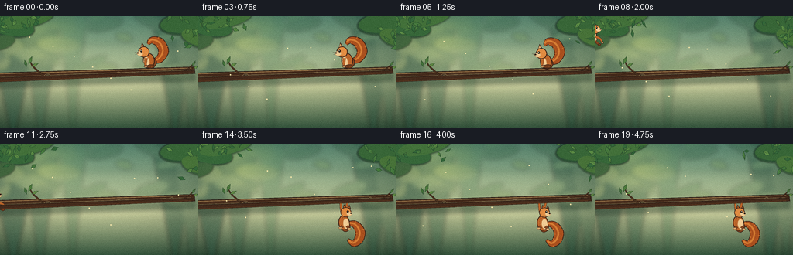
展开代码变化
--- 上一保存版本
+++ 本次保存版本
@@ -360,13 +360,13 @@
tail_points = [
(cx + 4, body_y + 1),
- (cx + 14 + sway, body_y - 2),
- (cx + 20 + sway * 1.4, body_y - 14),
- (cx + 14 + sway, body_y - 27),
- (cx + 3 + sway * 0.5, body_y - 31),
- (cx - 3, body_y - 25),
+ (cx + 13 + sway, body_y - 2),
+ (cx + 18 + sway * 1.4, body_y - 12),
+ (cx + 13 + sway, body_y - 23),
+ (cx + 3 + sway * 0.5, body_y - 26),
+ (cx - 2, body_y - 21),
]
- draw_tail(draw, tail_points, [4.2, 10.0, 13.5, 12.5, 8.5, 2.0], crouch)
+ draw_tail(draw, tail_points, [4.2, 9.0, 12.2, 11.4, 7.8, 1.8], crouch)
# Haunch, torso, cream chest, and the visible hind foot.
draw_ellipse(draw, cx + 1.5, body_y + 2.8, 7.8, 7.3, FUR_DARK, FUR_OUTLINE, 1.0, -12)
@@ -448,18 +448,18 @@
def draw_squirrel_hang(draw, cx: float, phase: float, settle: float):
head_x = cx + 1.0 + math.sin(phase) * 0.7
- head_y = 84.0 + settle * 1.0
- body_y = 96.0 + settle * 1.5
+ head_y = 88.0 + settle * 1.0
+ body_y = 101.0 + settle * 1.5
tail_points = [
- (cx + 5, body_y + 2),
- (cx + 13, body_y + 7),
- (cx + 19, body_y + 17),
- (cx + 12, body_y + 25),
- (cx + 3, body_y + 21),
- (cx + 1, body_y + 14),
+ (cx + 5, body_y + 1),
+ (cx + 14, body_y + 3),
+ (cx + 20, body_y + 12),
+ (cx + 18, body_y + 22),
+ (cx + 11, body_y + 27),
+ (cx + 4, body_y + 22),
]
- draw_tail(draw, tail_points, [4.0, 9.0, 12.0, 11.5, 7.0, 1.8], phase)
+ draw_tail(draw, tail_points, [4.0, 8.8, 11.5, 10.8, 7.0, 1.8], phase)
draw_ellipse(draw, cx + 1, body_y + 5.0, 6.2, 7.0, FUR_DARK, FUR_OUTLINE, 0.8, -3)
draw_ellipse(draw, cx - 1.0, body_y, 7.2, 9.8, FUR, FUR_OUTLINE, 1.0, -4 + math.sin(phase) * 2)
@@ -520,17 +520,17 @@
crouch = [0.35, 0.7, 0.92][frame_index - 4]
return ("perch", crouch, math.sin(frame_index * 1.1) * 0.35)
if frame_index == 7:
- return ("air", (201.0, 56.0, 20.0, 0.4, 0.15))
+ return ("air", (201.0, 56.0, 12.0, 0.4, 0.15))
if frame_index == 8:
- return ("air", (213.0, 45.0, -18.0, 1.0, 0.32))
+ return ("air", (213.0, 45.0, -7.0, 1.0, 0.32))
if frame_index == 9:
- return ("air", (220.0, 43.0, -46.0, 1.35, 0.48))
+ return ("air", (220.0, 43.0, -16.0, 1.35, 0.48))
if frame_index == 10:
- return ("air", (222.0, 51.0, -72.0, 1.2, 0.64))
+ return ("air", (222.0, 51.0, -24.0, 1.2, 0.64))
if frame_index == 11:
- return ("air", (216.0, 61.0, -91.0, 0.8, 0.78))
+ return ("air", (216.0, 61.0, -20.0, 0.8, 0.78))
if frame_index == 12:
- return ("air", (207.0, 70.0, -103.0, 0.45, 0.9))
+ return ("air", (207.0, 70.0, -12.0, 0.45, 0.9))
if frame_index == 13:
return ("hang", (190.0, 0.2, 1.0))
if frame_index <= 19:
候选 03播放与检查图
点击播放 · 原生 RGB 像素

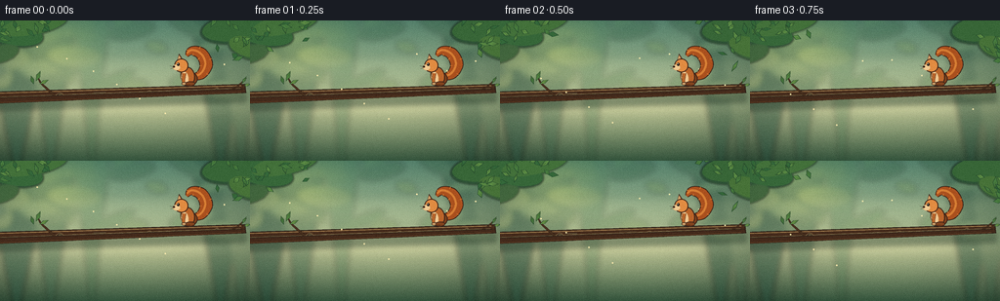
展开代码变化
--- 上一保存版本
+++ 本次保存版本
@@ -568,6 +568,7 @@
def main():
case_dir = Path(__file__).resolve().parent
+ RNG.seed(20261110)
background = make_background()
frames = np.stack([np.asarray(render_frame(index, background)) for index in range(20)])
artifact_io.save(frames, case_dir)
候选 04播放与检查图
点击播放 · 原生 RGB 像素

展开代码变化
--- 上一保存版本
+++ 本次保存版本
@@ -4,6 +4,7 @@
import random
from pathlib import Path
+import cv2
import numpy as np
from PIL import Image, ImageDraw, ImageFilter
@@ -572,6 +573,17 @@
background = make_background()
frames = np.stack([np.asarray(render_frame(index, background)) for index in range(20)])
artifact_io.save(frames, case_dir)
+ writer = cv2.VideoWriter(
+ str(case_dir / "video.mp4"),
+ cv2.VideoWriter_fourcc(*"mp4v"),
+ 4.0,
+ (W, H),
+ )
+ if not writer.isOpened():
+ raise RuntimeError("Could not open MP4 video writer")
+ for frame in frames:
+ writer.write(cv2.cvtColor(frame, cv2.COLOR_RGB2BGR))
+ writer.release()
print(f"Saved {len(frames)} frames to {case_dir}")
可观测工具轨迹
实际执行的命令与返回图片。
命令 1exit 0
/bin/bash -c "pwd && rg --files -g '"'!*.mp4'"' -g '"'!*.mov'"' -g '"'!*.webm'"' | sed -n '1,160p'"
命令 2exit 0
/bin/bash -c "printf '%s\\n' '--- prompt.txt ---'; sed -n '1,240p' prompt.txt; printf '%s\\n' '--- GENERATION_RULES.md ---'; sed -n '1,280p' GENERATION_RULES.md"
命令 3exit 0
/bin/bash -c "printf '%s\\n' '--- task_spec.json ---'; cat task_spec.json; printf '\\n%s\\n' '--- workspace ---'; ls -la"
命令 4exit 0
/bin/bash -c "sed -n '1,260p' artifact_io.py"
命令 5exit 0
/bin/bash -c "python - <<'PY' import importlib.util for m in ['numpy','PIL','cv2','imageio','matplotlib']: print(m, bool(importlib.util.find_spec(m))) PY"
命令 6exit 0
/bin/bash -c "sed -n '1,260p' player_template.html"
命令 7exit 0
/bin/bash -c 'python generate.py'
命令 8exit 0
/bin/bash -c "python - <<'PY'
from PIL import Image
for i in [0,3,6,7,8,9,10,11,12,13,19]:
im=Image.open(f'frames/{i:02d}.png')
im.resize((1024,576),Image.Resampling.NEAREST).save(f'.tmp/frame_{i:02d}_4x.png')
PY"命令 9exit 0
/bin/bash -c 'python generate.py'
命令 10exit 0
/bin/bash -c "python - <<'PY'
from PIL import Image
for i in [0,6,7,8,9,10,11,12,13,19]:
Image.open(f'frames/{i:02d}.png').resize((1024,576),Image.Resampling.NEAREST).save(f'.tmp/frame_{i:02d}_4x.png')
PY"命令 11exit 127
/bin/bash -c "python generate.py && python - <<'PY'
from pathlib import Path
import json
import numpy as np
from PIL import Image
spec=json.loads(Path('task_spec.json').read_text())
frames=sorted(Path('frames').glob('*.png'))
first=np.asarray(Image.open(frames[0]))
last=np.asarray(Image.open(frames[-1]))
print('spec', spec)
print('frame_count', len(frames))
print('first_shape', first.shape, first.dtype)
print('last_shape', last.shape, last.dtype)
print('pixels_shape', np.load('pixels.npz')['pixels'].shape)
print('inspection', Image.open('inspection.png').size)
print('transition', Image.open('transition_check.png').size)
print('player_bytes', Path('index.html').stat().st_size)
print('first_last_mean_abs_diff', float(np.abs(first.astype(float)-last.astype(float)).mean()))
PY
ffmpeg -y -loglevel error -framerate 4 -i frames/%02d.png -c:v libx264 -pix_fmt yuv420p -movflags +faststart video.mp4
ffprobe -v error -select_streams v:0 -show_entries stream=width,height,nb_frames,r_frame_rate,duration -of default=noprint_wrappers=1 video.mp4"命令 12exit 0
/bin/bash -c "sed -n '1,24p' generate.py; tail -n 24 generate.py"
命令 13exit 0
/bin/bash -c "python generate.py && python - <<'PY'
from pathlib import Path
import cv2
import numpy as np
from PIL import Image
cap=cv2.VideoCapture('video.mp4')
frames=[]
while True:
ok, frame=cap.read()
if not ok: break
frames.append(frame)
cap.release()
print('video', Path('video.mp4').stat().st_size, 'bytes')
print('video_frames', len(frames), 'shape', frames[0].shape if frames else None)
print('video_fps', cv2.VideoCapture('video.mp4').get(cv2.CAP_PROP_FPS))
print('pixels', np.load('pixels.npz')['pixels'].shape)
print('frames', len(list(Path('frames').glob('*.png'))))
PY"视觉工具实际返回图片 1

视觉工具实际返回图片 2
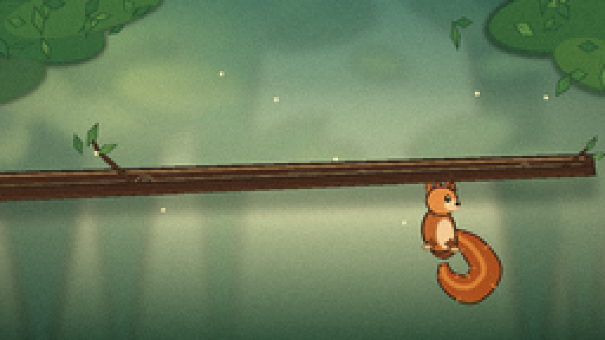
视觉工具实际返回图片 3
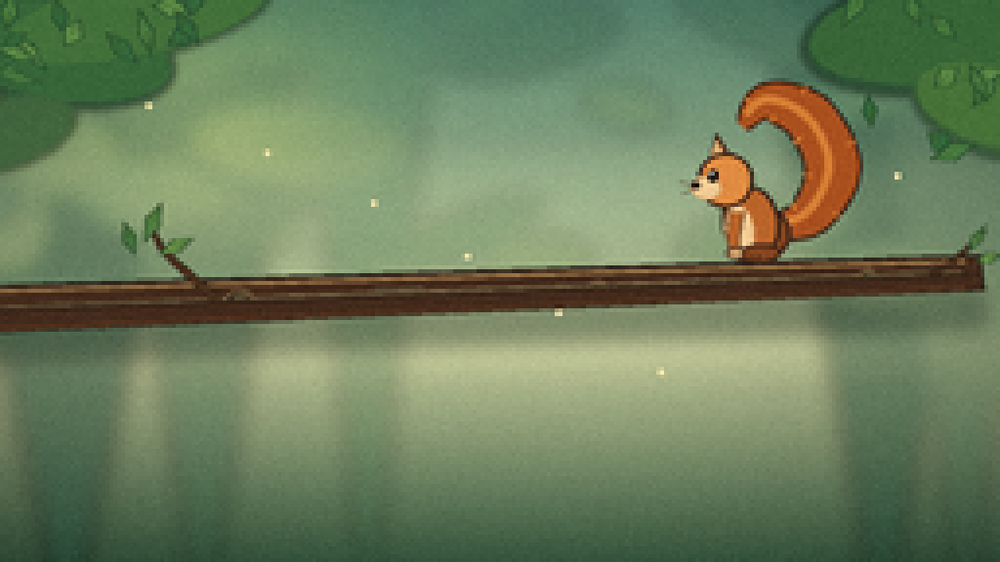
视觉工具实际返回图片 4
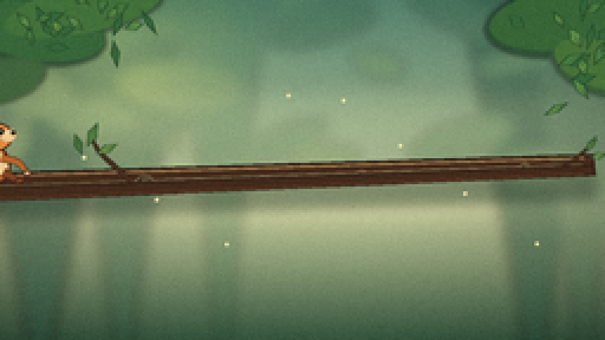
视觉工具实际返回图片 5
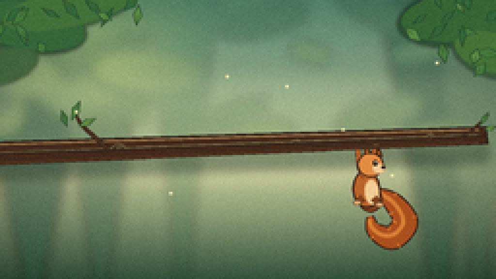
视觉工具实际返回图片 6
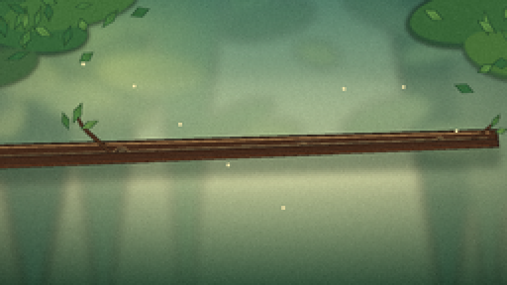
视觉工具实际返回图片 7

视觉工具实际返回图片 8
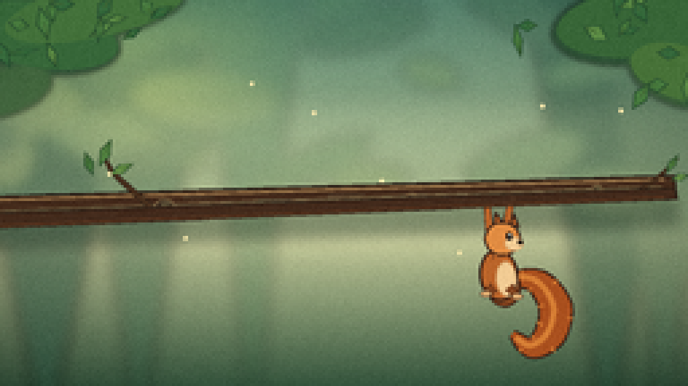
视觉工具实际返回图片 9
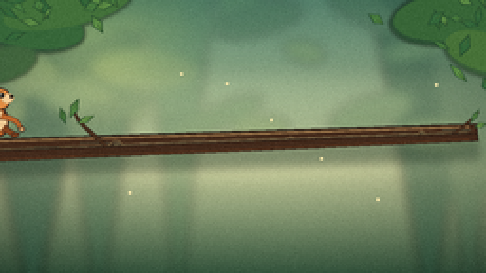
视觉工具实际返回图片 10
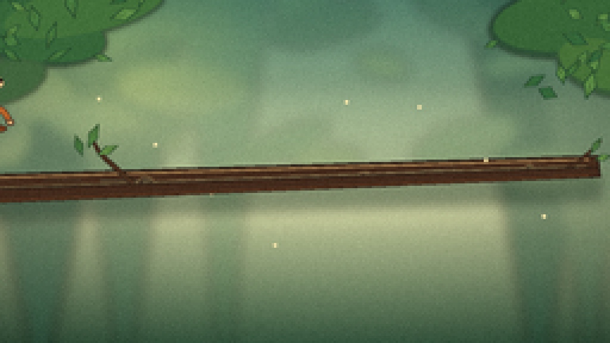
保存候选 4 份；完成命令 13 次；可验证图片返回 10 张。原始 API 响应与完整日志保留在本地。